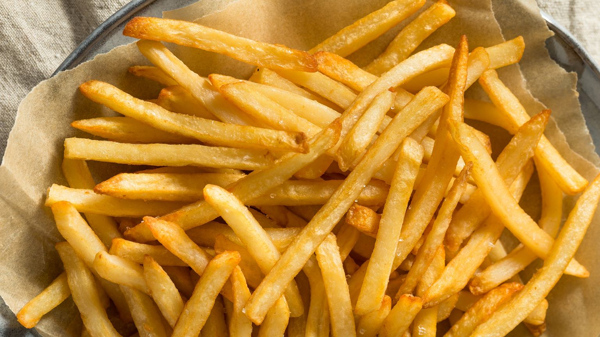
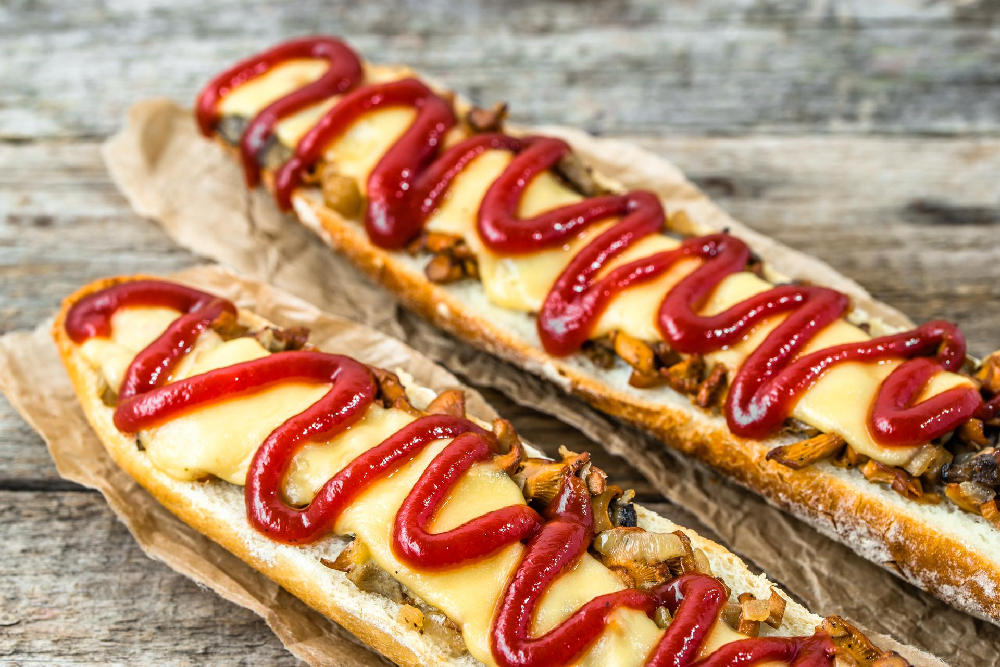

potrawa kuchni włoskiej, obecnie szeroko rozpowszechniona na całym świecie,
gdzie powstały jej nowe warianty. Jest to płaski placek z ciasta drożdżowego
(focaccia), z sosem pomidorowym, posypany tartym serem (najczęściej jest to mozzarella)
i ziołami, pieczony w bardzo mocno nagrzanym piecu. Pizzę podaje się na gorąco, lecz
rozpowszechnione jest jedzenie jej również na zimno.
Frytki

Frytki– pokrojone w kształt
słupków i smażone w głębokim tłuszczu ziemniaki albo inne warzywa, które są rzadziej
stosowane (np. marchewki lub buraki). Podawane jako samodzielny posiłek typu fast
food lub jako dodatek do potraw pieczonych lub smażonych, np. ryb.
Zapiekanka

Zapiekanka – polski fast food, powstały w latach 70. XX wieku,
w okresie Polskiej Rzeczypospolitej Ludowej,
sprzedawany również w późniejszym okresie.
Zapiekanki uznawane są za pierwszy polski street food.
Powstały w latach 70,
kiedy Polska kupiła licencję na produkcję bagietek.
Pierwotnie serwowany w formie podłużnej bułki z farszem
cebulowo-pieczarkowym okraszonej żółtym serem. Jest to rodzaj
gorącej kanapki, podawanej głównie z pieczarkami
(również z wędliną) na bułce zapiekanej z żółtym serem
i podawanej z keczupem lub innymi sosami